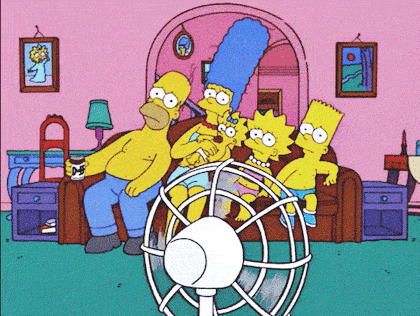

웹 프로그래밍 수업을 통해 나만의 멋진 공간을 만들어가는 중입니다.
저는 새로운 것에 도전하는 것을 좋아합니다. 이번 학기 목표는 나만의 포트폴리오 사이트 완성하기입니다! 아직은 HTML이 낯설지만, 차근차근 배워서 멋진 개발자가 되고 싶습니다.

제가 가장 좋아하는 취미는 사진 촬영입니다. 위 사진은 지난 주말에 찍은 풍경입니다.
저에 대해 더 궁금하시다면 나의 블로그 방문하기 또는 이메일 보내기를 클릭해 주세요.